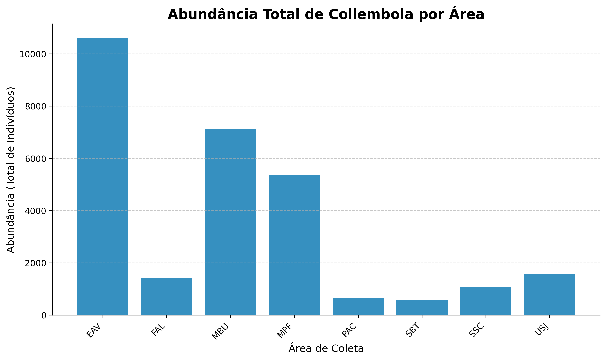
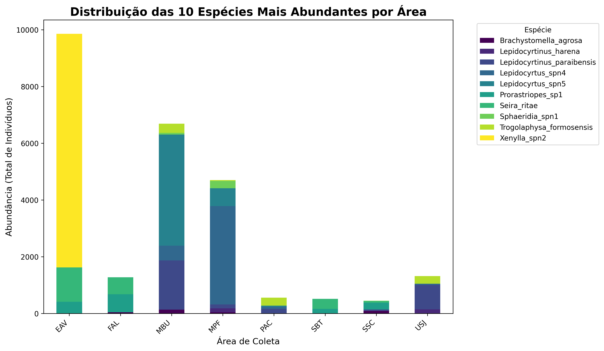
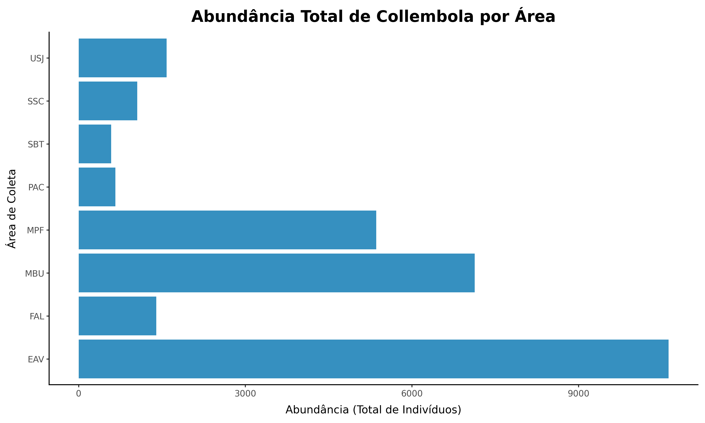
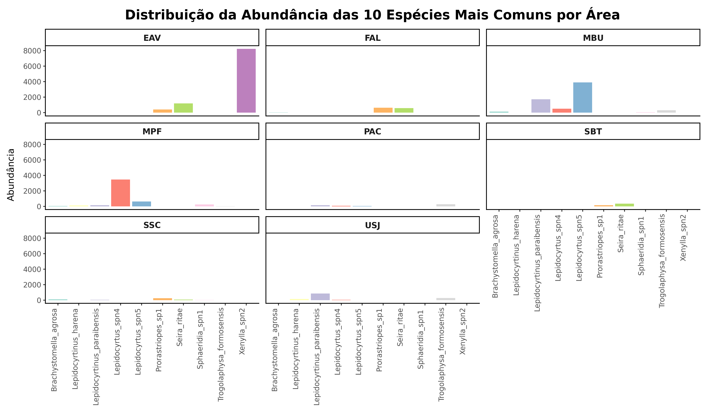

Comparação de Bibliotecas de Visualização e Aceleração Computacional em Python: Um Estudo com Dados da Fauna de Collembola
1.0 INTRODUÇÃO
Neste trabalho, exploramos três bibliotecas amplamente utilizadas no ecossistema Python: Matplotlib, Plotnine e Numba.
A primeira, Matplotlib, é uma das ferramentas mais tradicionais de visualização científica em Python, permitindo a criação de gráficos personalizados e de alta qualidade (Hunter 2007).
A segunda, Plotnine, apresenta uma sintaxe inspirada na Grammar of Graphics proposta por Wilkinson (2005), o que facilita a criação de visualizações declarativas e elegantes (Wilkinson 2005). Numba utiliza o método de compilação just-in-time (JIT), que converte funções Python em código de máquina durante a execução, acelerando de forma significativa operações numéricas e repetitivas (Lam, Pitrou, and Seibert 2015).
Para demonstrar a aplicação prática dessas ferramentas, foram utilizados dados de colêmbolos coletados em oito áreas distintas do estado da Paraíba. Os colêmbolos são artrópodes do solo que desempenham papel fundamental na ciclagem de nutrientes, decomposição da matéria orgânica e formação do solo (Hopkin 1997).
Os gráficos apresentados ilustram a variação na abundância e na distribuição das espécies entre as localidades, enquanto o experimento com Numba mostra os ganhos de desempenho em cálculos numéricos, exemplificados pelo método de Monte Carlo para a aproximação do valor de π.
2.0 PLOTAGEM EM PYTHON
2.1 Preparação dos Dados
# COMANDO MÁGICO ESSENCIAL: Garante que os gráficos sejam embutidos no HTML
%matplotlib inline
import pandas as pd
import matplotlib.pyplot as plt
from plotnine import (
ggplot,
aes,
geom_bar,
geom_point,
geom_col,
labs,
theme_classic,
coord_flip,
facet_wrap,
element_text,
scale_fill_brewer,
)
import numpy as np
# Carregar os dados (o arquivo CSV é um anexo no ambiente de trabalho)
df = pd.read_excel("dados.xlsx")
# Renomear a primeira coluna para 'Espécie'
df = df.rename(columns={df.columns[0]: "Espécie"})
# Transformar os dados do formato 'wide' para 'long' (tidy data)
df_long = df.melt(
id_vars="Espécie",
var_name="Área",
value_name="Abundância"
)
# Remover espécies com Abundância zero para simplificar
df_long_filtrado = df_long[df_long["Abundância"] > 0]
# Calcular a abundância total por Área e por Espécie (para os gráficos)
abundancia_por_area = (
df_long.groupby("Área")["Abundância"].sum().reset_index()
)
abundancia_por_especie = (
df_long.groupby("Espécie")["Abundância"].sum().reset_index()
)
# Pegar as 10 espécies mais abundantes
top_10_especies = abundancia_por_especie.nlargest(10, "Abundância")
df_top_10 = df_long[
df_long["Espécie"].isin(top_10_especies["Espécie"])
]2.2 Graficos em Matplotlib
A biblioteca Matplotlib segue uma abordagem imperativa, onde o gráfico é construído passo a passo.
# Gráfico 1 - Matplotlib: Abundância Total por Área
fig, ax = plt.subplots(figsize=(10, 6))
# Criação das barras
barras = ax.bar(
abundancia_por_area["Área"],
abundancia_por_area["Abundância"],
color="#3690c0" # Cor azul
)
# Adicionar rótulos e título (sintaxe imperativa: ax.set_...)
ax.set_title(
"Abundância Total de Collembola por Área",
fontsize=16,
fontweight="bold"
)
ax.set_xlabel("Área de Coleta", fontsize=12)
ax.set_ylabel("Abundância (Total de Indivíduos)", fontsize=12)
# Personalizações de estilo
plt.xticks(rotation=45, ha="right")
ax.spines["top"].set_visible(False)
ax.spines["right"].set_visible(False)
ax.grid(axis="y", linestyle="--", alpha=0.7)
plt.tight_layout()

2.3 Graficos em Plotnine
O Plotnine é baseado na Grammar of Graphics (Wilkinson, 2005), utilizando uma abordagem declarativa e em camadas.
# Gráfico 3: Abundância Total por Área (Coordenadas Invertidas)
print("Gerando e salvando Gráfico 3 (Plotnine)...")
plot_area_pn = (
ggplot(abundancia_por_area, aes(x="Área", y="Abundância"))
+ geom_col(fill="#3690c0")
+ coord_flip()
+ labs(
title="Abundância Total de Collembola por Área",
y="Abundância (Total de Indivíduos)",
x="Área de Coleta"
)
+ theme_classic()
+ theme(
plot_title=element_text(
size=16, weight="bold"
)
)
)
plot_area_pn.save('grafico_3_plotnine.png', width=10, height=6, dpi=300)
# Gráfico 4: Distribuição das Top 10 Espécies entre Áreas (Faceting)
print("Gerando e salvando Gráfico 4 (Plotnine)...")
plot_facet_pn = (
ggplot(
df_top_10,
aes(
x="Espécie",
y="Abundância",
fill="Espécie"
)
)
+ geom_col(show_legend=False)
+ facet_wrap("~ Área")
+ labs(
title="Distribuição da Abundância das 10 Espécies Mais Comuns por Área",
y="Abundância",
x=""
)
+ theme_classic()
+ theme(
axis_text_x=element_text(
rotation=90, hjust=1
),
strip_text_x=element_text(
size=10, weight="bold"
),
plot_title=element_text(
size=16, weight="bold"
),
)
+ scale_fill_brewer(type="qual", palette="Set3")
)
plot_facet_pn.save('grafico_4_plotnine.png', width=12, height=7, dpi=300)
print("\nSUCESSO: Todos os 4 gráficos foram salvos como arquivos PNG na sua pasta.")

3.0 ACELERAÇÃO COMPUTACIONAL COM NUMBA
O Numba é um compilador just-in-time (JIT) que traduz funções Python para código de máquina otimizado (usando LLVM), resultando em ganhos drásticos de desempenho para códigos que envolvem operações matemáticas intensivas e loops.
Para demonstrar sua eficácia, utilizamos o Método de Monte Carlo para aproximar o valor de \(\pi\). Este método simula pontos aleatórios em um quadrado e calcula a proporção de pontos que caem dentro de um círculo inscrito. Por ser altamente repetitivo, é um cenário ideal para a compilação JIT.
Exemplo: Resultados da Comparação de Desempenho (codigo no arquivo anlise_numba.py)
O experimento a seguir utiliza 10.000.000 (10 milhões) de pontos para calcular a aproximação de \(\pi\). O tempo de execução da função Python pura é comparado à versão acelerada pelo Numba JIT.
| Métrica | Python Puro | Numba JIT |
|---|---|---|
| Pi Aproximado | 3.141462 | 3.142258 |
| Tempo de Execução (s) | 7.9092 | 0.3311 |
Ganho de Desempenho (Aceleração): 23.89x (O Numba foi 23.89 vezes mais rápido)
4.0 CONCLUSÃO
Através da análise do banco de dados, este trabalho demonstrou as capacidades e as diferenças de desempenho entre as principais ferramentas do Python, resumidas em dois pontos principais:
Visualização (Matplotlib & Plotnine): Foi possível mapear a distribuição da fauna de Collembola e ilustrar as diferenças conceituais entre as bibliotecas. Matplotlib se mostrou ideal para o controle fino e a criação de gráficos científicos precisos. Plotnine ofereceu visualizações mais elegantes com menos código.
Aceleração Computacional (Numba): O experimento realizado com o Método de Monte Carlo demonstrou o valor do high-performance computing. Com o Numba, o tempo de execução foi drasticamente reduzido, gerando um ganho de desempenho de 23.89x.
Em resumo, este projeto valida o Python como uma plataforma robusta e completa, capaz de integrar a visualização eficaz de dados com a aceleração numérica de alto desempenho.